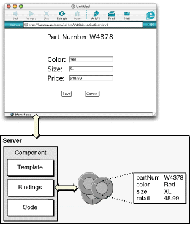

| PATH |

In HTML-based WebObjects applications (as in all WebObjects applications), enterprise objects encapsulate the application's business logic and provide the connection with the application's databases. Since enterprise objects are objects, they can appear as variables in components, sessions, or the application object. A component's bindings file relates the component's enterprise-object instances to the attributes of its dynamic elements. Figure 4-2 shows how enterprise objects relate to a component in a WebObjects application.
Figure 4-2 How enterprise objects relate to a WebObjects component
